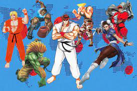
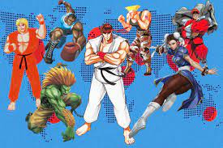
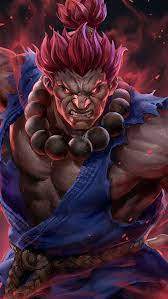

I love to play videogames, especially the ones I grew up playing. I used to spend all my hours watching minecraft videos and playing street fighter.
Nothing can really compare to the experience I had when I was younger when it came to videogames, I just started to love playing them from the start.
If you were to ask me to play a videogame with you, even if I've never played it before, I will happily join in the fun
Theres still a countless number of titles I have yet to play and I find it amazing how this form of entertainment can bring about so many different communities.
Here we have one of my favorite modpacks available that I actually still play in Minecraft and the main fighter I use whenever I play Street Fighter, his name being Akuma